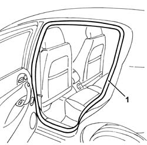
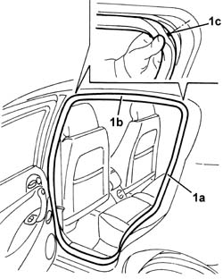

7010A34 rear side door compartment seal r r
- Path
- Procedures > 70 FITTINGS > 7010 PASSENGER COMPARTMENT REAR SIDE DOORS > 7010A rear side door assembly > 7010A34 rear side door compartment seal r r
- Kind
- repair procedure (removal / refitting; the operation number is the code)
- Applies to
- all engines; all production periods
- Interactive page
- https://sloeber94.github.io/elrnDB-a147/en/#/3025698
Applies to: all engines; all production periods
 Removing
Removing
 Refitting
Refitting1. Prise up the seal from its seat.

Applies to: all engines; all production periods
Refitting
RemovingCheck that the seal is intact and undamaged.
1. Fit the seal (1a) in its housing. Start fitting it from the top corner (1b) and position the reference marks (1c) for the seal in the centre of the corners.
